augmented reality concept for delivering nutrition information to consumers in-store (master's thesis)
Parsing nutrition information is both complex and tedious. Even with existing digital tools, once at the supermarket, it can be difficult to get an overview and extract the facts needed to make an informed buying decision. Loup proposes a solution using augmented reality to place the power of information in the hand of the consumer.
A device designed to resemble a magnifying glass promotes ideas of search, discovery, and inspection. A holographic app creates real-life product filters and make the supermarket searchable. Combined, Loup investigates the relationship between user, device, and interface and explores the potentials of AR to augment our everyday reality.
____ tools: unity3d, vuforia, adobe xd
____ prototypes: iOS, HoloLens
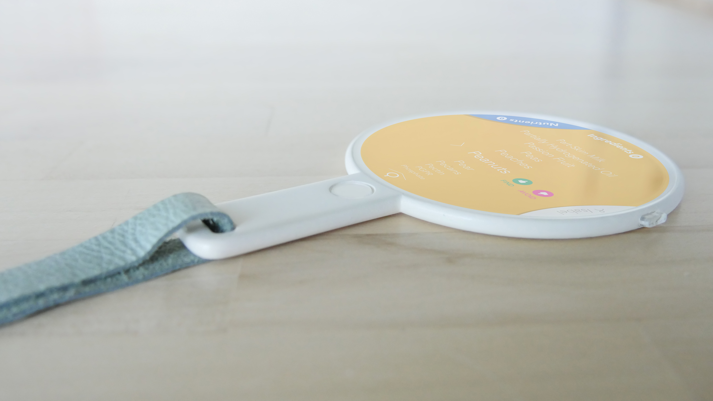 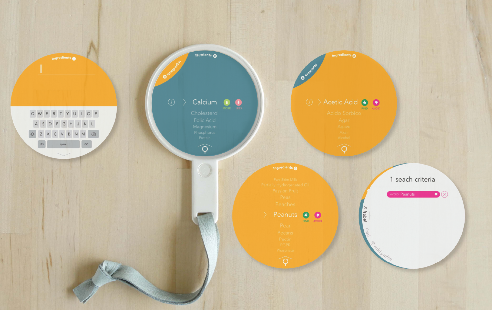 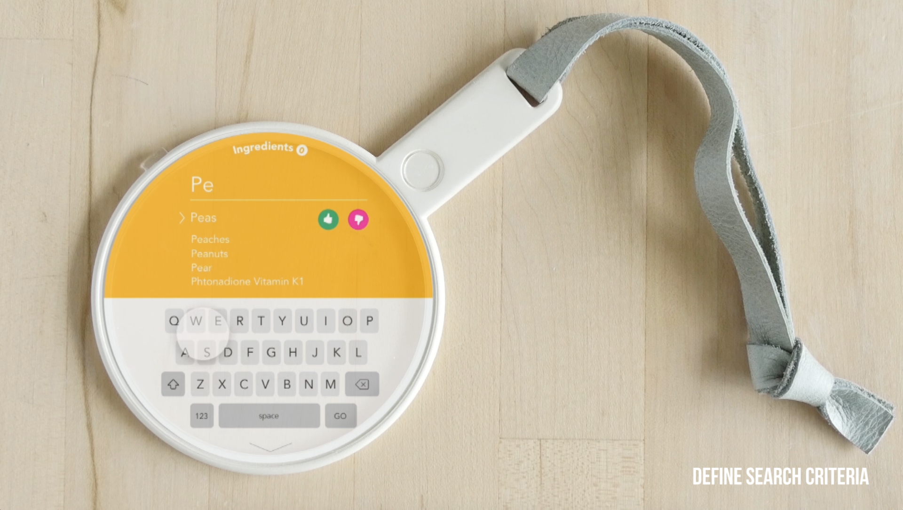 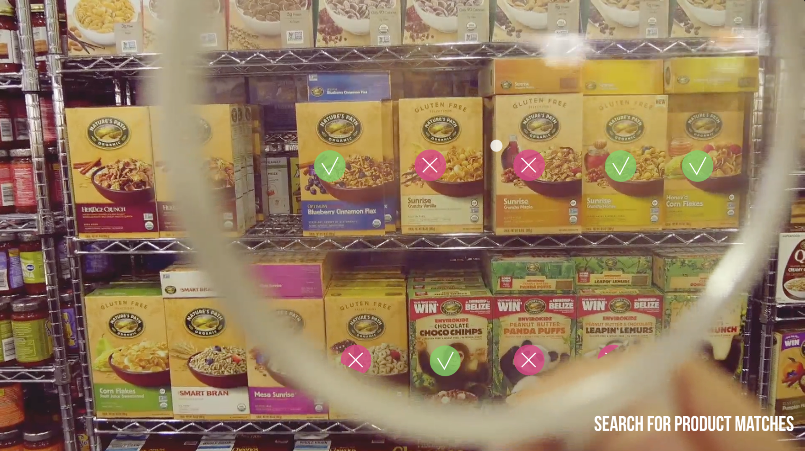 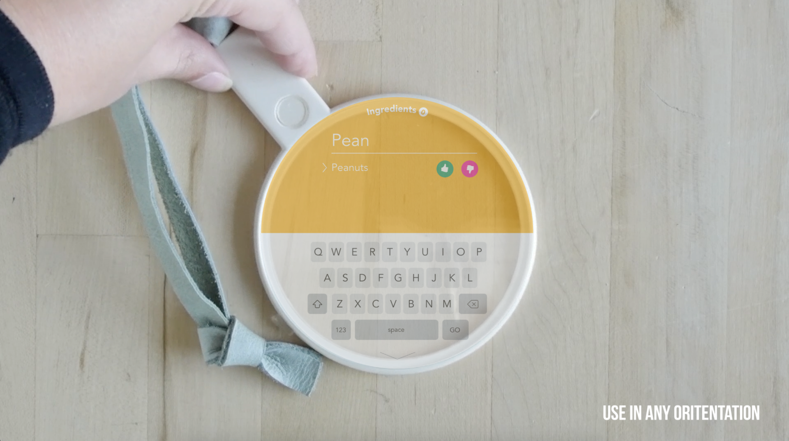 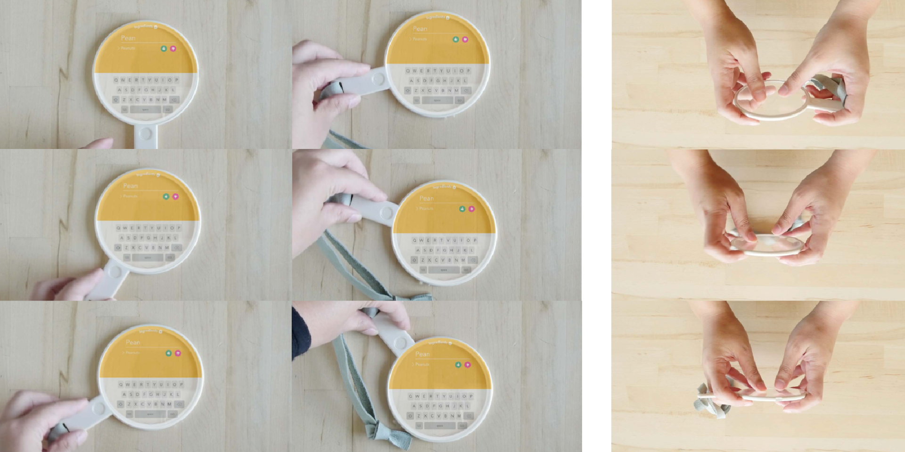 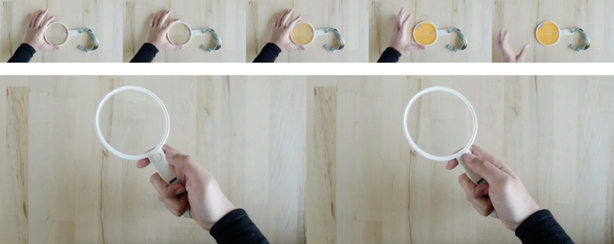 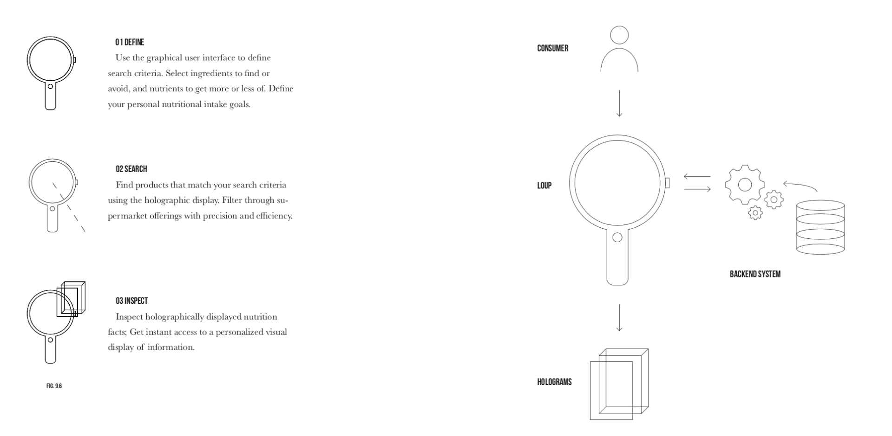 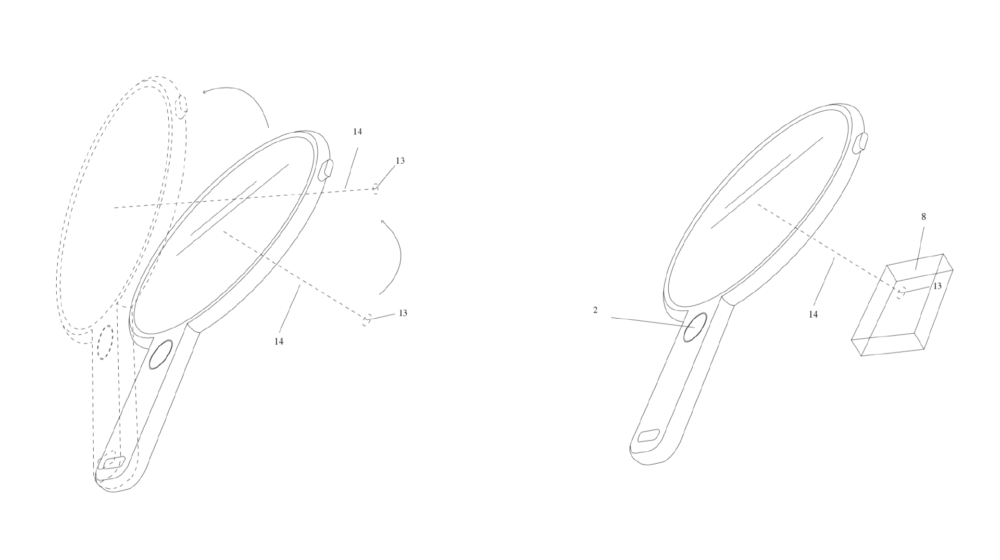 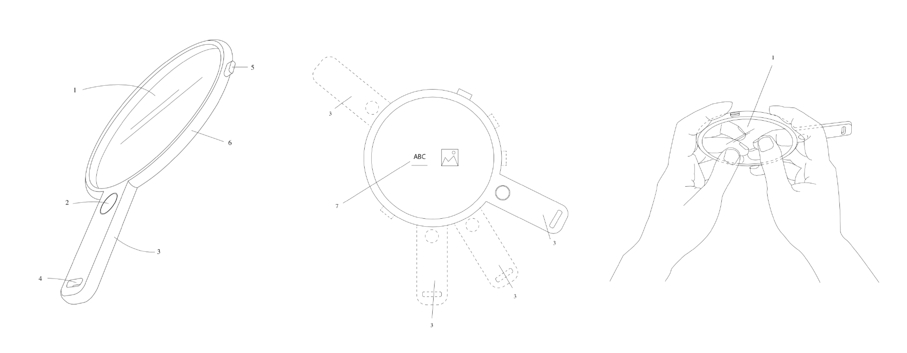 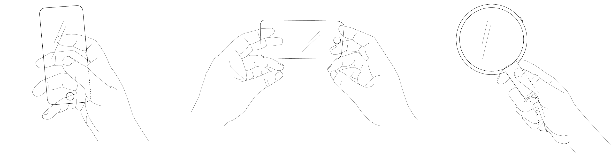